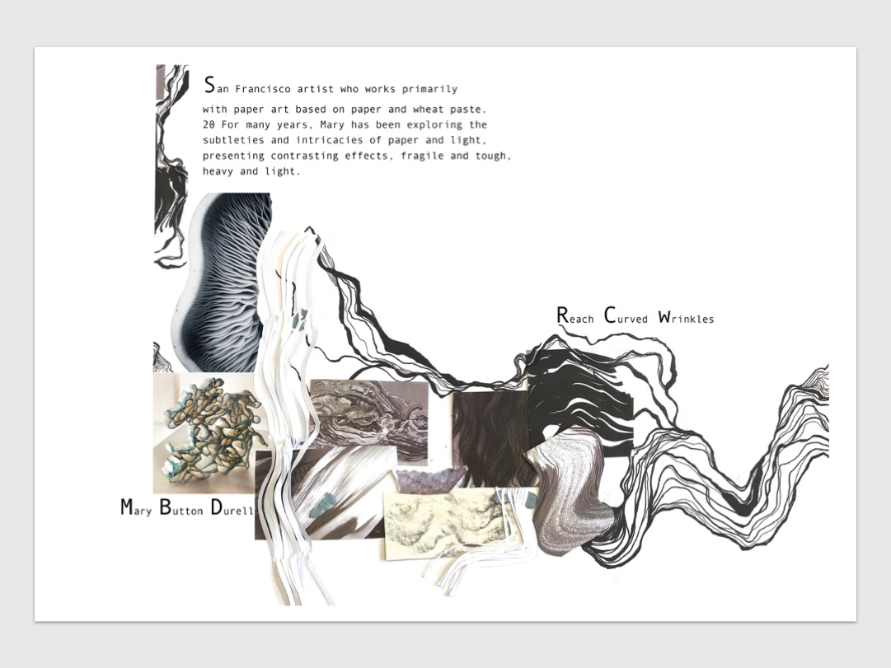
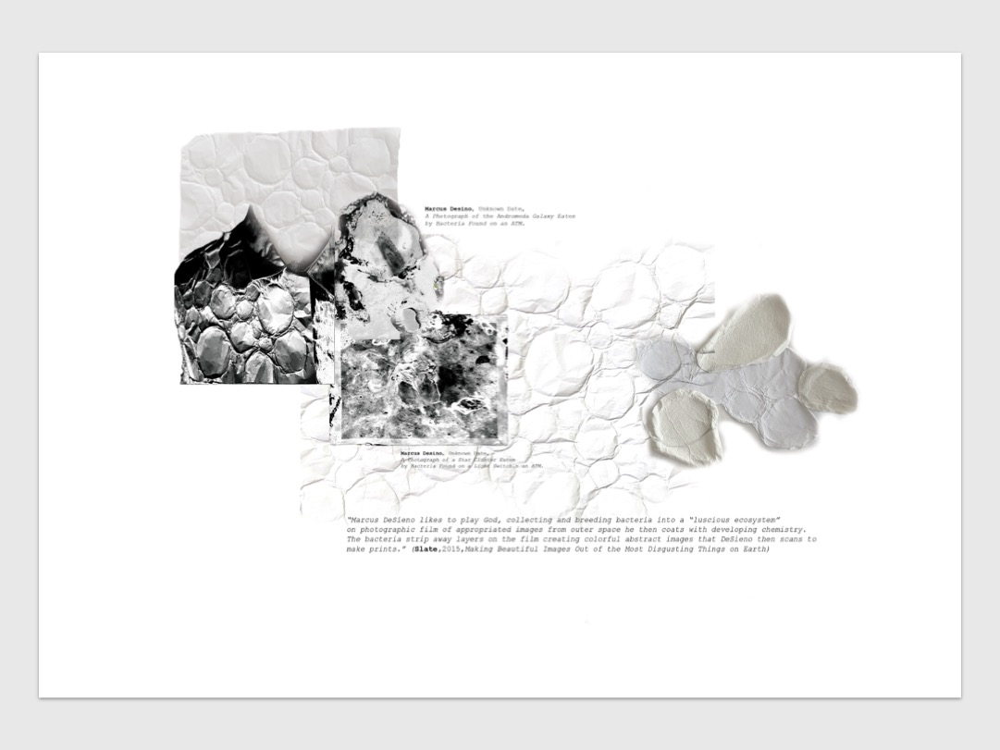
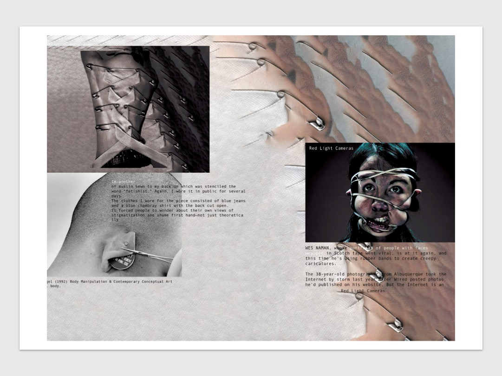
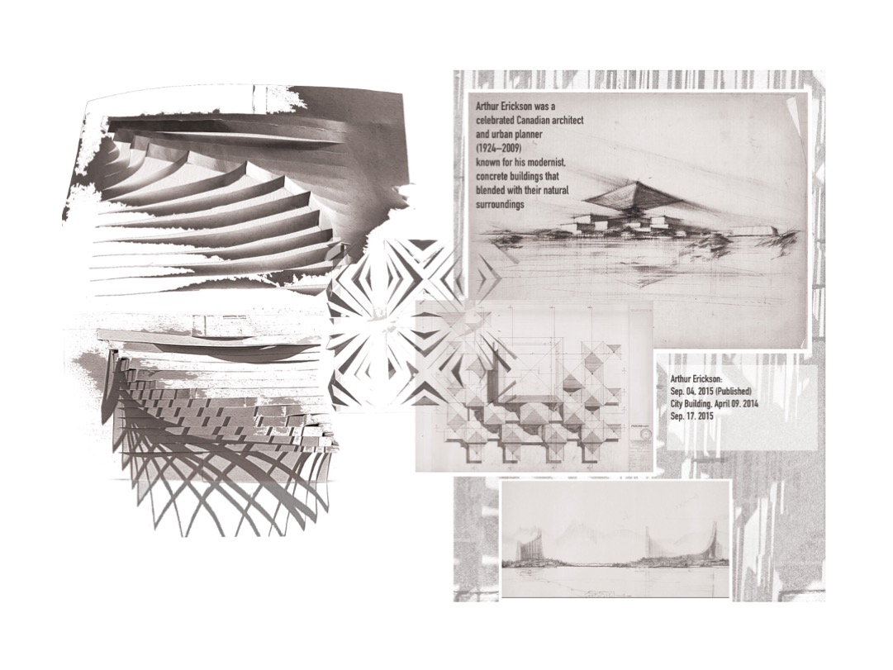

Welcome to Term 1, Rotation 1. This session introduces two key skills you will use throughout your design portfolio: Photoshop techniques for developing creative ideas from physical research, and research page conventions including how to correctly reference your sources.
By the end of this session you will have:
Used Photoshop's Content-Aware Fill to expand an image from your physical work into a new digital composition
Added artist research and contextual notes to an A3 layout
Understood what a strong research page includes — with reference to student examples
Created at least one Harvard-style reference for your portfolio
Documented and reflected on your learning
Session Plan at a Glance
🎨
Task 1 — 60 min
Photoshop: Content-Aware Fill, artist research & keyboard shortcuts quiz
📄
Task 2 — 30 min
Research page — review student examples and check your own page
📚
Task 3 — 20 min
Write a Harvard reference for your chosen artist
📝
Task 4 — 20 min
Document your progress and reflect on what you have learned
💡 Before You Start
Have a scanned image from your physical sketchbook ready to use in Photoshop
Have your research folder open — you will need your artist references for Tasks 2 and 3
Open Photoshop and set up a new A3 document before beginning Task 1
🎨 Task 1 — Photoshop: Content-Aware Fill & Artist Research (60 minutes)
Use Photoshop's Content-Aware Fill to creatively expand your physical artwork, then add artist research and reflective notes to your A3 layout.
Document Setup:
File → New → A3 Landscape (420 × 297 mm)
Resolution: 300 dpi | Colour Mode: CMYK
Step-by-Step Workflow
1
Prepare Your Document
File → New → A3 Landscape | 300 dpi | CMYK
Add a white background layer: Edit → Fill → White
2
Import Your Physical Work
Drag and drop your scanned image into Photoshop, or use File → Place Embedded…
Use Move Tool (V) to position and Cmd/Ctrl + T to resize or rotate
3
Content-Aware Fill — Expand Your Ideas
Use Rectangular Marquee Tool (M) to select an interesting area — a texture, shape, or detail
Cmd/Ctrl + C then Cmd/Ctrl + V to create a new layer of just that section
Hide the original layer using the 👁 eye icon so your cut-out sits on white
Use Magic Wand Tool (W) to select the white background around your shape
Go to Edit → Content-Aware Fill… → preview and adjust → click OK
Why do this? Content-Aware Fill helps you think more abstractly with your primary research — generating new textures and forms that can inspire future design ideas.
4
Refine & Blend
Experiment with blending modes and layer opacity to unify your composition
Merge layers when you are satisfied with the result
5
Add Text & Artist Research
Use Type Tool (T) to add artist names, short quotes, and reflective notes
Keep sentences short and focused — quality over quantity
Text size for A3 print: 9–14pt is usually sufficient
Avoid placing text directly over busy image areas — give it breathing room
6
Save Your Work
Save as Photoshop (.PSD) to keep all layers editable
Export as JPEG (.JPG) for upload to Padlet
Artist Research & Reflection
Choose one artist whose work connects to your visual ideas. Add their name, a short quote or idea, and one or two sentences explaining what you learned from their practice. You will write a formal Harvard reference for this artist in Task 3.
Artists to explore:
Gerhard Richter — blurring to question memory and photography
Lorna Simpson — combining image and text to explore identity
Andreas Gursky — building digital compositions from multiple images
Ruth van Beek — cut-outs that suggest movement and emotion
Sarah Charlesworth — how images communicate concepts
Tutorial Video
⌨️ Keyboard Shortcuts Practice
Test your knowledge of essential Photoshop shortcuts. Select your operating system and work through all ten questions.
Photoshop Shortcuts Quiz
Select your OS then answer each question
Loading…
Quiz Complete!
Task 1 Checklist ✓
Created A3 document at 300 dpi CMYK
Imported scanned physical work
Used Content-Aware Fill to expand the image
Applied blending modes and layer refinement
Added artist name, quote, and reflection text
Saved as PSD and exported as JPEG
Completed the keyboard shortcuts quiz
📄 Task 2 — Research Page: What to Include (30 minutes)
A strong research page shows thinking, connections, and evidence of research — not just a collection of images. Study the student examples below, then apply these principles to your own work.
Student Examples — Good Practice
These pages demonstrate strong research practice. Notice how images, annotations, research links, and references work together. Click any image to enlarge.

🖼️Add: student-research-1.jpg
🔍 enlarge
Strong research links and visual connectionsStudent: [Name] — used with permission

🖼️Add: student-research-2.jpg
🔍 enlarge
Strong annotations showing genuine personal responseStudent: [Name] — used with permission

🖼️Add: student-research-3.jpg
🔍 enlarge
Artist reference clearly integrated with the pageStudent: [Name] — used with permission

🖼️Add: student-research-4.jpg
🔍 enlarge
Balanced layout with credited sources and clear titleStudent: [Name] — used with permission
Essential Elements of a Research Page
🖼️
Primary Research Images
Your own photographs, sketches, or observations — original material you have gathered yourself
🔗
Research Links
Secondary images (artist work, textiles, fashion) that visually connect to your primary research and show where ideas came from
✍️
Annotations & Labels
Short written notes explaining your choices — what you notice, what interests you, what connects to your design ideas
🎨
Artist / Designer Reference
At least one named artist or designer whose work relates to your research, with a brief explanation of the connection
📚
Sources & References
Where did your secondary images come from? All sources must be credited — see Task 3 for Harvard referencing
🗂️
Clear Title or Subheading
A heading that tells the reader what this page is about — keeps your portfolio organised and easy to navigate
What Makes a Research Page Strong?
Strong research pages show:
A clear visual relationship between primary research and secondary images
Genuine curiosity — annotations show you are thinking analytically, not just describing
Evidence that research is directly informing your design ideas
A consistent, readable layout — easy to follow and visually balanced
All sources credited correctly throughout
⚠️ Common Mistakes to Avoid
Images placed without any annotations — the reader cannot see your thinking
No research links — where did the design ideas come from?
Sources uncredited — all images and references must be acknowledged
Subtitles or text that dominate the layout — keep typography sensitive and proportionate
Disconnected images — everything on the page should relate to a clear theme
Task 2 Checklist ✓
Reviewed the student examples and identified strong practice
Page has a clear title or subheading
Primary research images are present
Research links show where ideas came from
Annotations explain your thinking analytically
At least one artist or designer is named and connected
All sources used in your portfolio must be referenced correctly. This task introduces Harvard referencing — the style used across your course.
Why Do We Reference?
Referencing matters because:
It shows you have done genuine research — not just collected images
It gives credit to the artists, designers, and photographers whose work you use
It is a required and assessed element of your portfolio
It builds good academic habits that support you throughout your studies
How Harvard Referencing Works
Harvard referencing uses an author–date system with two parts:
The Two Parts
1
In-Text Citation — used directly on your page
When you reference something on your research or design page, add a short citation in brackets:
Format
(Author surname, Year)
Examples
(Richter, 1988) | (Simpson, 2002, p. 14)
2
Reference List Entry — at the end of your portfolio section
The full reference gives all the information needed to find the source.
Book
Surname, Initial. (Year) Title in Italics. Place: Publisher.
Artwork in a Gallery
Artist, Initial. (Year) Title of Work [Medium]. City: Gallery.
Website
Author (Year) Page Title. Available at: URL (Accessed: Day Month Year).
Online Artwork / Image
Artist, Initial. (Year) Title [Medium]. Available at: URL (Accessed: Day Month Year).
Try It — Write Your First Reference
Use the Harvard Referencing Guide below to write a reference for the artist you chose in Task 1. Add the in-text citation to your A3 layout and save the full reference for your portfolio.
For artworks always include the medium in square brackets — e.g. [Oil on canvas] or [Digital photograph]
For websites always include the date you accessed it
Your reference list should be in alphabetical order by author surname
Use et al. in citations for three or more authors, but list all names in the reference list
Task 3 Checklist ✓
Understand the difference between in-text citation and reference list
Written a full reference for your chosen artist
Added in-text citation to your A3 layout
Used the Harvard Referencing Guide to check your formatting
All sources in your portfolio section are now credited
📝 Task 4 — Document & Reflect on Your Learning (20 minutes)
Use the final 20 minutes to document your progress and reflect on what you have learned today. This evidence supports your portfolio and demonstrates your development as a designer.
Why document your practice?
It shows your tutor how you have learned, not just what you produced
It builds a record of skills developed across the term
Reflective writing is a key graduate attribute at Level 5 and above
Your documentation is submitted alongside your practical work on Padlet
How to Complete Your Progress Documentation
📋 Progress Documentation Tool
Open the tool, complete all four sections, download your PDF, and upload it to Padlet alongside your other work.
1
Enter your name and take screenshots of your Photoshop work
2
Upload 2–3 screenshots showing your progress today
3
Rate your confidence and answer all four reflection questions
4
Download as PDF and upload to Padlet with your JPEG